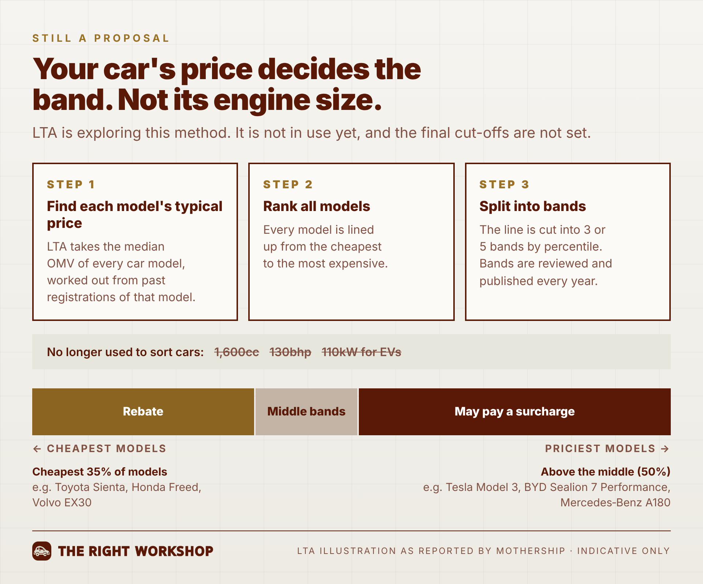

LTA today proposed a new COE system for cars. Cat A and Cat B would merge into one category, and buyers would then get money off or pay extra depending on how expensive their car model is. It is only a proposal for now. LTA is asking the public for feedback and suggestions until 2 November 2026.
To own a car in Singapore, you first need a permit called a COE. Right now, small cars and big cars queue for that permit in two separate lines. LTA wants just one line, where everyone pays the same price for the permit. After that, if your car is a cheaper model, you get some money back. If it is an expensive model, you pay a bit more. It is only an idea for now, and nothing changes until LTA decides, which should be in the first half of 2027.
Small cars and big cars would bid together and pay the same COE price. After that, the price is adjusted by the value of the car.
| Your car | What happens to your COE price |
|---|---|
| Cheaper model | Rebate of up to $15,000 |
| Mid-range model | No change |
| Pricier model | Surcharge of up to $15,000 |
Under the proposal, engine size and power would stop deciding what you pay. Today, the line between Cat A and Cat B is 1,600cc and 130bhp, or 110kW for electric cars. In the merged category, those limits would no longer sort cars. LTA is exploring using the car's value instead, measured by its open market value (OMV).
OMV is roughly what a car costs by the time it lands in Singapore: the purchase price plus freight, insurance and delivery, before Singapore's taxes and the COE. A cheaper model has a lower OMV, and a luxury model has a higher one.
Here is the method LTA has described:
LTA has not published fixed dollar amounts or engine sizes for each band. It has shared an illustration, reported by Mothership, of where some models might land:
| Where the model ranks | What it could mean | Examples in LTA's illustration |
|---|---|---|
| Cheapest 35% of models | Rebate | Toyota Sienta, Honda Freed, Volvo EX30 |
| Above the middle (50th percentile) | May pay a surcharge | Tesla Model 3, BYD Sealion 7 Performance, Mercedes-Benz A180 |

LTA is choosing between two options:
| Option | Bands |
|---|---|
| Three bands | $15,000 off · no change · $15,000 extra |
| Five bands | $15,000 off · $7,500 off · no change · $7,500 extra · $15,000 extra |

Cat A was meant to keep COEs cheaper for smaller, mass-market cars. That has stopped working. At yesterday's bidding on 7 October, Cat A closed at $130,001 and Cat B at $130,100.
Linking the COE to the car's value is LTA's way of making pricier cars pay more again.

Anyone can respond to the consultation. LTA is asking for views on the merged category, the rebate and surcharge bands, what to do with Cat E, and whether renewals should be included. You can also share your own suggestions for the COE system.
Go to go.gov.sg/coe-pcd-feedback. Feedback is open from 8 October 2026, 5pm, to 2 November 2026, 11.59pm.
Buying a car soon: nothing changes yet. COE bidding runs on today's Cat A and Cat B rules until LTA says otherwise. See the latest prices on our COE results page.
Renewing your COE soon: today's rules apply. LTA has said it could consider transitional arrangements for current owners. Our COE renewal vs scrap guide helps you decide.
If the car's value starts to decide your COE bill, it pays to know exactly what you are buying. Our pre-purchase inspection checks any new or used car before you commit.
We'll track every update on our news feed, and you can also check the OneMotoring portal for official notices.